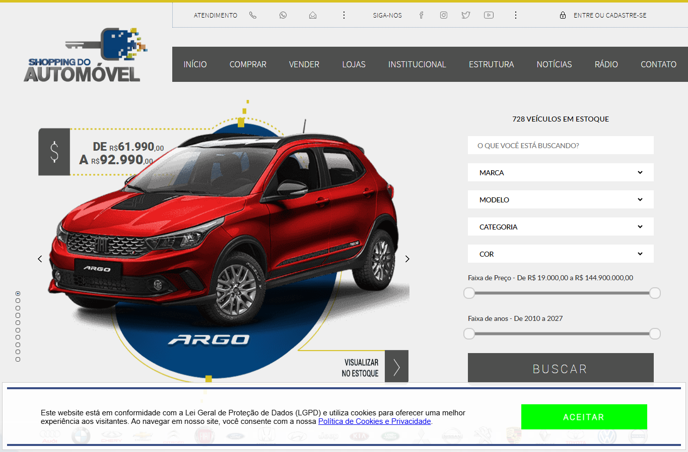
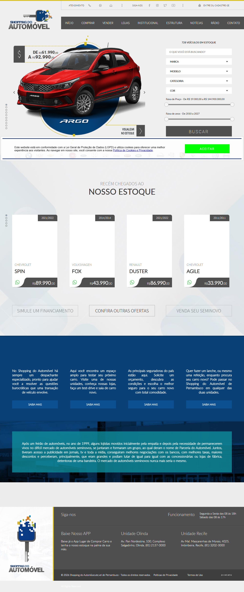

Sistema de Investigação de Marca e Identidade Online
https://parceriadoautomovel.com.br/
Prioridade: MEDIUM · Cenário: B_AMBIGUOUS_COMMUNICATION · Revisão humana: PENDING
Trata-se do portal comercial do 'Shopping do Automóvel de Pernambuco' / 'Parceria do Automóvel' (parceriadoautomovel.com.br), estabelecimento dentro do escopo de revenda e intermediação de financiamento de veículos. Embora possua identidade visual própria e mencione a BV em contexto multibancos (junto a Bradesco, Santander, Safra e Pan), o site disponibiliza jornada de 'Simule um Financiamento' e seção de 'Financeiras', reproduz texto institucional da BV Financeira em 1ª pessoa (E-TXT-005, E-TXT-006) e omite completamente o CNPJ, a razão social e a declaração de correspondente bancário exigida pela Resolução CMN nº 4.935/2021 (E-DISC-002, E-SHOT-FULL). Portanto, classifica-se como B_AMBIGUOUS_COMMUNICATION / REVIEW_REQUIRED (prioridade MEDIUM). [Revisor: CONFIRM] A hipótese do analista se sustenta. O domínio parceriadoautomovel.com.br pertence a um auto shopping comercial de revenda de veículos ('Shopping do Automóvel de Pernambuco' / 'Parceria do Automóvel'), alvo legítimo da investigação. A página oferece simulação de financiamento ('SIMULE UM FINANCIAMENTO' em E-SHOT-FULL e menu 'FINANCEIRAS' em E-NAV) e menciona expressamente a 'BV' e 'BV Financeira' (E-TXT-003, E-TXT-005, E-TXT-006), inclusive utilizando texto promocional em primeira pessoa sem delimitação de autoria, ao mesmo tempo em que omite razão social, CNPJ, condição de correspondente bancário e ouvidoria exigidos pela Resolução CMN nº 4.935/2021. Confirma-se REVIEW_REQUIRED com prioridade MEDIUM.


| Ref | Tipo | Local | Conteúdo |
|---|---|---|---|
| E-URL | domain | url | URL final: https://parceriadoautomovel.com.br/ (domínio: parceriadoautomovel.com.br) |
| E-COLLECT | network | collection | Status da coleta: OK; HTTP 200; ocorrências: network did not become idle (continuing) |
| E-DISC-001 | text | search_index | Índice de busca (grounding): parceriadoautomovel.com.br — **URL:** `https://parceriadoautomovel.com.br/` |
| E-DISC-002 | text | search_index | Índice de busca (grounding): parceriadoautomovel.com.br — **URL:** `https://parceriadoautomovel.com.br/` | Mascarenhas de Morais, 4025, Imbiribeira, Recife) e a marca *"© 2026 Shopping do Automóvel de Pernambuco"*, mas não exibe de forma visível o CNPJ, a razão social da associação/administradora nem a declaração formal de correspondente bancário exigida pela Resolução CMN nº 4.935/2021 |
| E-SHOT-VIEWPORT | screenshot | viewport | evidence\C3932650d29\attempt-1\viewport.png (sha256 ec55afe381e24229…) |
| E-SHOT-FULL | screenshot | page | evidence\C3932650d29\attempt-1\fullpage.png (sha256 d6774b940c7ae868…) |
| E-TITLE | title | head | Carros novos, seminovos e usados | Lugar de Comprar Carro |
| E-META-1 | meta | head | description: Os melhores veículos novos, seminovos e usados de Pernambuco em 51 lojas localizadas em Recife e Olinda, com as melhores ofertas e condições para você. Confira! |
| E-META-2 | meta | head | og:site_name: Lugar de Comprar Carro |
| E-META-3 | meta | head | og:title: Carros novos, seminovos e usados | Lugar de Comprar Carro |
| E-META-4 | meta | head | og:description: Os melhores veículos novos, seminovos e usados de Pernambuco em 51 lojas localizadas em Recife e Olinda, com as melhores ofertas e condições para você. Confira! |
| E-META-5 | meta | head | author: rodrigo@pixelato.com.br |
| E-CANONICAL | meta | head | https://www.lugardecomprarcarro.com.br/ |
| E-HEAD-1 | heading | page | Lugar de Comprar Carro | Shopping do Automovel de Pernambuco - 728 veiculos em estoque |
| E-HEAD-2 | heading | page | Veiculos novos e seminovos em Pernambuco |
| E-HEAD-3 | heading | page | Os melhores veiculos de Recife e Olinda. |
| E-FOLD | text | viewport (acima da dobra) | Este website está em conformidade com a Lei Geral de Proteção de Dados (LGPD) e utiliza cookies para oferecer uma melhor experiência aos visitantes. Ao navegar em nosso site, você consente com a nossa Política de Cookies e Privacidade . ACEITAR Atendimento Siga-nos Entre ou Cadastre-se Início Comprar Vender Lojas Institucional Estrutura Financeiras Despachante Seguradora Espaço Criança Gastronomia Estacionamento Test-Drive Notícias Notícias Podcast Rádio Contato DE R$ 61.990 ,00 A R$ 92.990 ,00 DE R$ 44.990 ,00 A R$ 65.990 ,00 DE R$ 39.990 ,00 A R$ 62.990 ,00 DE R$ 36.990 ,00 A R$ 72.900 ,00 DE R$ 57.990 ,00 A R$ 57.990 ,00 DE R$ 51.990 ,00 A R$ 93.990 ,00 DE R$ 89.990 ,00 A R$ 161.990 ,00 DE R$ 64.990 ,00 A R$ 129.990 ,00 DE R$ 94.990 ,00 A R$ 145.990 ,00 DE R$ 149.900 ,00 A R$ 239.990 ,00 728 veículos em estoque Faixa de Preço - De R$ 19.000,00 a R$ 144.900.000,00 Faixa de anos - De 2010 a 2027 BUSCAR Lugar de Comprar Carro | Shopping do Automovel de Pernambuco - 728 veiculos em estoque Veiculos novos e seminovos em Pernambuco Os melhores veiculos de Recife e Olinda. Os melhores veiculos de Pernambuco, em duas unidades, em Recife e Olinda, com mais de 50 lojas, ofertas e condições incríveis para você comprar seu carro novo. Quer carros novos, seminovos, semi novos ou usados, baratos, em Recife ou Olinda? Temos as melhores marcas (Audi, BMW, Chery, Chevrolet, Citroen, Fiat, Ford, Honda, Hyundai, Jeep, Kia, Land Rover, Mercedes-Benz, Mitsubishi, Nissan, Peugeot, Porsche, Renault, Suzuki, Toyota, Volkswagen, Volvo, Yamaha, Kawasaki, Harley-Davidson e muito mais), os melhores modelos (Onix, Ka, Toro, Gol, Sandero, Prisma, HB20, Duster, Compass, Frontier, Ranger, Argo, Etios, Polo, Golf, Ecosport, Tracker, C4, C3, Versa, Siena, Renegade, Fox, Uno, T-Cross, Captur, Ix35, Creta, Civic, Corolla, S10, Tiggo, Montana, Joy, Pajero, Mobi, Saveiro, Kicks, Voyage, Kwid, Creta, Spacefox, Picanto e muito mais), sempre com ofertas, promoções e feirões exclusivos. Não deixe de visi |
| E-NAV | nav | header | Pagina Inicial <https://parceriadoautomovel.com.br/> | <tel:(81) 3202-0000> | <https://api.whatsapp.com/send?1=pt_BR&phone=558132020000> | <mailto:sac@csape.com.br> | <http://facebook.com/automovelpe> | <http://instagram.com/automovelpe> | <http://twitter.com/automovelpe> | <http://www.youtube.com/automovelpebr> | ENTRE OU CADASTRE-SE <https://parceriadoautomovel.com.br/entrar> | INÍCIO <https://parceriadoautomovel.com.br/> | VENDER <https://parceriadoautomovel.com.br/venda> | LOJAS <https://parceriadoautomovel.com.br/lojas> | INSTITUCIONAL <https://parceriadoautomovel.com.br/conteudo/quem-somos> | FINANCEIRAS <https://parceriadoautomovel.com.br/conteudo/financeiras> | DESPACHANTE <https://parceriadoautomovel.com.br/conteudo/despachante> | SEGURADORA <https://parceriadoautomovel.com.br/conteudo/seguradora> | ESPAÇO CRIANÇA <https://parceriadoautomovel.com.br/conteudo/espaco-crianca> | GASTRONOMIA <https://parceriadoautomovel.com.br/conteudo/gastronomia> | ESTACIONAMENTO <https://parceriadoautomovel.com.br/conteudo/estacionamento> | TEST-DRIVE <https://parceriadoautomovel.com.br/conteudo/test-drive> | NOTÍCIAS <https://parceriadoautomovel.com.br/noticias> | PODCAST <https://parceriadoautomovel.com.br/podcast> | RÁDIO <https://parceriadoautomovel.com.br/radio> | CONTATO <https://parceriadoautomovel.com.br/contato> |
| E-CONTACT-1 | contact | header | <tel:(81) 3202-0000> |
| E-CONTACT-2 | contact | header | <https://api.whatsapp.com/send?1=pt_BR&phone=558132020000> |
| E-CONTACT-3 | contact | header | <mailto:sac@csape.com.br> |
| E-CONTACT-4 | contact | header | <http://facebook.com/automovelpe> |
| E-CONTACT-5 | contact | header | <http://instagram.com/automovelpe> |
| E-CONTACT-6 | contact | page | <https://api.whatsapp.com/send?1=pt_BR&phone=558132020000> |
| E-CONTACT-7 | contact | footer | Siga-nos no Facebook <https://facebook.com/automovelpe> |
| E-CONTACT-8 | contact | footer | Siga-nos no Instagram <https://instagram.com/automovelpe> |
| E-CONTACT-9 | contact | footer | Telefone da Unidade Olinda <tel:(81) 2137-0000> |
| E-CONTACT-10 | contact | footer | Whatsapp da Unidade Olinda <https://api.whatsapp.com/send?1=pt_BR&phone=558121370000> |
| E-CONTACT-11 | contact | footer | Telefone da Unidade Imbiribeira <tel:(81) 3202-0000> |
| E-CONTACT-12 | contact | footer | Whatsapp da Unidade Imbiribeira <https://api.whatsapp.com/send?1=pt_BR&phone=558132020000> |
| E-TXT-001 | text | page | ATENDIMENTO |
| E-TXT-002 | text | page | Após um feirão de automóveis, no ano de 1999, alguns lojistas movidos inicialmente pela empatia e depois pela necessidade de permanecerem vivos no difícil mercado de automóveis seminovos, se juntaram e formaram um grupo, ao qual deram o nome de Parceria do Automóvel. Juntos, tiveram acesso a publicidade em jornais, tv e toda a mídia, conseguiram melhores negociações com os bancos, com melhores |
| E-TXT-003 | text | page | Bradesco, BV, Safra, Santander, entre outras), despachantes, seguradoras, estacionamentos amplos, espaço gastronômico, espaço para crianças, com piscina de bolas, pula pula, briquedoteca, PSP, espaço de arte e profissionais treinados para o apoio e cuidado do bem estar e segurança da sua criança e disponibilizamos um espaço grande para test-drive, em ambas as unidades, para que você possa dar uma |
| E-TXT-004 | text | page | Pernambuco - Lugar de Comprar Carro, o maior auto shopping da regiao, te ajuda assim. Em cada unidade (Recife e Olinda), um restaurante/lanchonete de qualidade para atender os clientes em atendimento ou não. Quer fazer um lanche, ou mesmo fazer uma refeição? Pode passar no Shopping do Automovel de Pernambuco - Lugar de Comprar Carro, o maior auto shopping da regiao, em qualquer das duas unidades. |
| E-TXT-005 | text | page | A praticidade e a comodidade de um amplo estacionamento com segurança, e ainda melhor, grátis. Isso mesmo, apesar de ser um shopping, nosso estabelecimento disponibiliza ao nosso cliente, um serviço de estacionamento e monitoramento grátis do seu veículo. Com a BV Financeira, você pode financiar o seu carro, moto, caminhão, ônibus ou utilitário, seja novo ou usados, nacional ou importado, por |
| E-TXT-006 | text | page | meio de operações de leasing e CDC. Procure agora mesmo um lojista parceiro ou acesse o nosso site. Crédito sujeito a análise e aprovação. Informe-se sobre o CET antes de contratar seu empréstimo/financiamento. Ao optar por fazer um financiamento conosco, a única coisa que você terá de fazer é perguntar ao revendedor de veiculos se ele oferece nossas soluções de financiamento, leasing ou |
| E-TXT-007 | text | page | Financiamento Santander, você conta com toda segurança e profissionalismo que merece. As taxas e condições especiais dessa linha de crédito, além da facilidade na aquisição, ajudarão você a realizar seus sonhos e projetos tranqüilamente. Agilidade, atendimento diferenciado e uma das melhores condições do mercado para transformar seus projetos em realidade. Peça Bradesco Financiamentos! Seu sonho |
| E-TXT-008 | text | page | pode virar realidade mais rápido do que pensa! O Banco Pan oferece diversas possibilidades para você adquirir ou trocar seu carro ou moto, por um novo, seminovo, semi novo ou usado. Nossa unidade Recife está localizada na Av Mal. Mascarenhas de Morais, 4025, Imbiribeira, Recife-PE. Você pode ligar para a unidade, no número (81) 3202-0000. O horário de atendimento da unidade é de Segunda a Sexta |
| E-TXT-009 | text | page | das 08 às 18h e Sábado das 08 às 17h. Nossa unidade Olinda está localizada na Av. Pan Nordestina, 100, Complexo Salgadinho, Olinda-PE. Você pode ligar para a unidade, no número (81) 2137-0000. O horário de atendimento da unidade é de Segunda a Sexta das 08 às 18h e Sábado das 08 às 17h. Mas não é só isso! No site do Shopping do Automovel de Pernambuco - Lugar de Comprar Carro, o maior auto |
| Dimensão | Sinal | Achado | Refs |
|---|---|---|---|
| VISUAL_IDENTITY | LEGITIMATE | A identidade visual da página é própria do 'Shopping do Automóvel de Pernambuco' / 'Lugar de Comprar Carro', sem utilização das cores ou layout institucional do Banco BV. | E-SHOT-VIEWPORT E-SHOT-FULL |
| DECLARED_COMMERCIAL_IDENTITY | CONFUSION | Apresenta nome fantasia ('Shopping do Automóvel de Pernambuco' / 'Parceria do Automóvel') e endereços físicos em Recife e Olinda, mas não informa CNPJ nem razão social no rodapé ou no corpo da página. | E-DISC-002 E-TXT-002 E-TXT-008 E-TXT-009 E-SHOT-FULL |
| CORRESPONDENT_TRANSPARENCY | CONFUSION | Atua na intermediação/divulgação de financiamento de veículos ('SIMULE UM FINANCIAMENTO', menu 'FINANCEIRAS') citando a BV Financeira, mas não apresenta aviso de correspondente bancário nem ouvidoria das instituições parceiras. | E-DISC-002 E-NAV E-TXT-003 E-TXT-005 E-SHOT-FULL |
| INSTITUTIONAL_LANGUAGE | CONFUSION | Incorpora texto institucional da BV Financeira em 1ª pessoa ('Com a BV Financeira, você pode financiar... acesse o nosso site... Ao optar por fazer um financiamento conosco... nossas soluções de financiamento') sem aspas ou distinção clara. | E-TXT-005 E-TXT-006 |
| LOGO_USAGE | LEGITIMATE | Não foi identificado uso do logotipo do Banco BV na página inicial inspecionada. | E-SHOT-VIEWPORT E-SHOT-FULL |
| SERVICE_JOURNEY | NEUTRAL | A página inicial é um portal de classificados de veículos de um auto shopping com botão 'SIMULE UM FINANCIAMENTO' e seção de 'FINANCEIRAS', sem formulários de captação direta na home. | E-FOLD E-NAV E-SHOT-FULL |
| CONTACT_CHANNELS | LEGITIMATE | Os canais de contato (telefones fixos, WhatsApp, redes sociais @automovelpe e e-mail sac@csape.com.br) estão claramente vinculados às unidades Olinda e Imbiribeira do Shopping do Automóvel. | E-CONTACT-1 E-CONTACT-3 E-CONTACT-9 E-CONTACT-11 E-SHOT-FULL |
| CONSUMER_CONFUSION | NEUTRAL | O consumidor reconhece tratar-se de um auto shopping multimarcas/multibancos, mas a ausência de CNPJ, de declaração de correspondente e a reprodução de textos em 1ª pessoa das financeiras reduzem a transparência exigida pela norma. | E-TXT-003 E-TXT-005 E-TXT-006 E-TXT-007 E-SHOT-FULL |
Trata-se do portal comercial do 'Shopping do Automóvel de Pernambuco' / 'Parceria do Automóvel' (parceriadoautomovel.com.br), estabelecimento dentro do escopo de revenda e intermediação de financiamento de veículos. Embora possua identidade visual própria e mencione a BV em contexto multibancos (junto a Bradesco, Santander, Safra e Pan), o site disponibiliza jornada de 'Simule um Financiamento' e seção de 'Financeiras', reproduz texto institucional da BV Financeira em 1ª pessoa (E-TXT-005, E-TXT-006) e omite completamente o CNPJ, a razão social e a declaração de correspondente bancário exigida pela Resolução CMN nº 4.935/2021 (E-DISC-002, E-SHOT-FULL). Portanto, classifica-se como B_AMBIGUOUS_COMMUNICATION / REVIEW_REQUIRED (prioridade MEDIUM).
Nenhum CNPJ ou razão social identificáveis no conteúdo coletado.
| Tipo | Valor | Ref | Contexto |
|---|---|---|---|
| domain | parceriadoautomovel.com.br | E-URL | |
| rodrigo@pixelato.com.br | E-META-5 | ||
| sac@csape.com.br | E-NAV | ||
| social_profile | http://facebook.com/automovelpe | E-NAV | |
| social_profile | http://instagram.com/automovelpe | E-NAV | |
| social_profile | http://www.youtube.com/automovelpebr | E-NAV | |
| social_profile | https://facebook.com/automovelpe | E-CONTACT-7 | |
| social_profile | https://instagram.com/automovelpe | E-CONTACT-8 | |
| trade_name | Lugar de Comprar Carro | E-META-2 | |
| phone | (81) 3202-0000 | E-NAV | |
| phone | (81) 2137-0000 | E-CONTACT-9 | |
| <https://api.whatsapp.com/send?1=pt_BR&phone=558132020000> | E-CONTACT-2 | ||
| Whatsapp da Unidade Olinda <https://api.whatsapp.com/send?1=pt_BR&phone=558121370000> | E-CONTACT-10 | ||
| Whatsapp da Unidade Imbiribeira <https://api.whatsapp.com/send?1=pt_BR&phone=558132020000> | E-CONTACT-12 |
Mapeamento indicativo para apoio à auditoria. Não constitui conclusão regulatória; a decisão definitiva pertence à auditoria.
Fonte: NORMATIVE
Art. 14. O contrato de correspondente deve estabelecer: [...] II - vedação à utilização, pelo contratado, de logomarca ou de outros atributos que sejam similares aos adotados pela instituição contratante em suas agências, postos de atendimento, sítio eletrônico na internet, aplicativo ou outras plataformas de comunicação em rede;
Evidência observada: E-SHOT-FULL E-SHOT-VIEWPORT
Fonte: NORMATIVE
Art. 14. O contrato de correspondente deve estabelecer: [...] III - divulgação ao público, pelo contratado, de sua condição de prestador de serviços à instituição contratante, identificada pelo nome com que é conhecida no mercado, com descrição dos produtos e serviços oferecidos e canais de contato da instituição contratante, inclusive de sua ouvidoria, em local visível, em destaque e em formato legível, por meio de: a) sítio eletrônico do correspondente na internet, acessível na página inicial; b) aplicativo e outras plataformas de comunicação em rede do correspondente; [...]
Hipótese: Divulgação ao público da condição de prestador de serviços à contratante ausente, insuficiente ou sem destaque. A norma disciplina correspondentes contratados; o responsável não foi identificado como correspondente.
Evidência observada: E-DISC-002 E-NAV E-SHOT-FULL E-TXT-002 E-TXT-003 E-TXT-005 E-TXT-006 E-TXT-008 E-TXT-009
Informação faltante:
Fonte: NORMATIVE
Art. 3º O correspondente atua por conta e sob as diretrizes da instituição contratante, que assume inteira responsabilidade pelo atendimento prestado aos clientes e usuários por meio do contratado.
Evidência observada: E-CONTACT-1 E-CONTACT-11 E-CONTACT-3 E-CONTACT-9 E-SHOT-FULL
Se o responsável não for correspondente contratado, os indícios podem caracterizar uso indevido de marca ou fraude, fora do escopo da Res. 4.935: avaliar encaminhamento às áreas jurídica/segurança.
Limitações: requisitos contratuais/internos não fornecidos: mapeamento limitado ao texto normativo
Decisão: CONFIRM → REVIEW_REQUIRED / MEDIUM
A hipótese do analista se sustenta. O domínio parceriadoautomovel.com.br pertence a um auto shopping comercial de revenda de veículos ('Shopping do Automóvel de Pernambuco' / 'Parceria do Automóvel'), alvo legítimo da investigação. A página oferece simulação de financiamento ('SIMULE UM FINANCIAMENTO' em E-SHOT-FULL e menu 'FINANCEIRAS' em E-NAV) e menciona expressamente a 'BV' e 'BV Financeira' (E-TXT-003, E-TXT-005, E-TXT-006), inclusive utilizando texto promocional em primeira pessoa sem delimitação de autoria, ao mesmo tempo em que omite razão social, CNPJ, condição de correspondente bancário e ouvidoria exigidos pela Resolução CMN nº 4.935/2021. Confirma-se REVIEW_REQUIRED com prioridade MEDIUM.
| Tema | Severidade | Questionamento | Refs |
|---|---|---|---|
| Escopo de inspeção da jornada de financiamento | LOW | A menção à BV Financeira na página inicial ocorre no código/texto extraído (E-TXT-003, E-TXT-005, E-TXT-006), possivelmente em bloco SEO ou oculto, enquanto a página dedicada '/conteudo/financeiras' e o fluxo do botão 'SIMULE UM FINANCIAMENTO' não foram inspecionados nesta coleta. Contudo, a ausência de CNPJ, razão social e avisos regulatórios da Resolução CMN nº 4.935/2021 na página já sustenta a necessidade de revisão. | E-NAV E-TXT-005 E-TXT-006 E-SHOT-FULL |
| domain_attribution | MEDIUM | Responsável pela página não identificado; a conclusão sobre a marca não pode ser atribuída a um estabelecimento específico. | E-URL |
| Fonte | Consulta / hipótese | URL original | Título / trecho |
|---|---|---|---|
| grounding | Objetivo: Estabelecimentos (concessionária em Recife) que divulgam financiamento da marca.
Execute no Google Search as seguintes consultas (dorks):
- concessionária "Recife" ("Banco BV" OR "bv financeira") (financiamento OR correspondente) -site:bv.com.br -site:bancobv.com.br -site:bvfinanceira.com.br -site:bvinvestimentos.com.br -site:napista.com.br -site:bvopen.com.br -site:meufinanciamentosolar.com.br -site:votorantim.com.br -site:vam.com.br -site:reclameaqui.com.br -site:jusbrasil.com.br -site:jus.br -site:weebly.com -site:site123.me
Liste de forma abrangente as páginas públicas encontradas (até 12 resultados distintos), informando para cada uma o nome do estabelecimento/perfil, a URL e como a marca é utilizada (destaque visual, título, feirão, simulador, redes sociais e se há ou não identificação clara de CNPJ e condição de correspondente bancário). H5-establishment:concessionária:Recife | https://parceriadoautomovel.com.br/ | parceriadoautomovel.com.br **URL:** `https://parceriadoautomovel.com.br/` |
| grounding | Objetivo: Estabelecimentos (concessionária em Recife) que divulgam financiamento da marca.
Execute no Google Search as seguintes consultas (dorks):
- concessionária "Recife" ("Banco BV" OR "bv financeira") (financiamento OR correspondente) -site:bv.com.br -site:bancobv.com.br -site:bvfinanceira.com.br -site:bvinvestimentos.com.br -site:napista.com.br -site:bvopen.com.br -site:meufinanciamentosolar.com.br -site:votorantim.com.br -site:vam.com.br -site:reclameaqui.com.br -site:jusbrasil.com.br -site:jus.br -site:weebly.com -site:site123.me
Liste de forma abrangente as páginas públicas encontradas (até 12 resultados distintos), informando para cada uma o nome do estabelecimento/perfil, a URL e como a marca é utilizada (destaque visual, título, feirão, simulador, redes sociais e se há ou não identificação clara de CNPJ e condição de correspondente bancário). H5-establishment:concessionária:Recife | https://www.parceriadoautomovel.com.br/ | parceriadoautomovel.com.br **URL:** `https://parceriadoautomovel.com.br/` | Mascarenhas de Morais, 4025, Imbiribeira, Recife) e a marca *"© 2026 Shopping do Automóvel de Pernambuco"*, mas não exibe de forma visível o CNPJ, a razão social da associação/administradora nem a declaração formal de correspondente bancário exigida pela Resolução CMN nº 4.935/2021 |
Original: https://parceriadoautomovel.com.br/
Final: https://parceriadoautomovel.com.br/
| Artefato | Caminho | SHA-256 | Bytes |
|---|---|---|---|
| screenshot_viewport | evidence\C3932650d29\attempt-1\viewport.png | ec55afe381e24229ecec029ebf8714221b8cb6840ecdb6370e12642cf73e95cb | 463461 |
| screenshot_full | evidence\C3932650d29\attempt-1\fullpage.png | d6774b940c7ae868dc6473a85b2e8fa8f3cb876037bbd6ca32054a693e80778f | 1004629 |
| html | evidence\C3932650d29\attempt-1\page.html.txt | 584ae60afe5f45719942b846f821ddf92a4c0ab184050c8d53a6da5bc370f071 | 103331 |
| text | evidence\C3932650d29\attempt-1\text.txt | a964ece83be398de4b819d1332fd92975c935f011c95e98beb9a893ebe6288aa | 17049 |
| page_data | evidence\C3932650d29\attempt-1\page.json | eb61497a635f2b2304d2f31f38848135348b42db2e094d785e9ec6029b52e787 | 44514 |
| Quando | De | Para | Nota |
|---|---|---|---|
| 2026-11-23T14:17:59+00:00 | DISCOVERED | QUEUED | prioritised (score 0.0) |
| 2026-11-23T15:03:53+00:00 | QUEUED | COLLECTING | |
| 2026-11-23T15:04:08+00:00 | COLLECTING | COLLECTED | |
| 2026-11-23T15:04:08+00:00 | COLLECTED | ANALYZING | |
| 2026-11-23T15:04:54+00:00 | ANALYZING | REVIEWING | |
| 2026-11-23T15:05:08+00:00 | REVIEWING | COMPLETED |